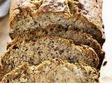

Banana Nut Bread

Description
A great snack anytime!
Ingredients
- 1 1/4 cups sugar
- 1/2 cup margarine or butter, softened
- 2 eggs
- 1 1/2 cups mashed ripe bananas (3 to 4 medium)
- 1/2 cup buttermilk
- 1 teaspoon vanilla
- 2 1/2 cups all-purpose flour
- 1 teaspoon baking soda
- 1 teaspoon salt
- 1 cup chopped nuts, if desired
Steps
- Place oven rack in lowest position.
- Heat oven to 350 degrees.
-
Grease bottoms only of 2 loaf pans, 1 loaf pan, 9x5x3 inches.
- Mix sugar and margarine in large bowl.
- Stir in eggs until well blended.
- Add bananas, buttermilk and vanilla.
- Beat until smooth.
-
Stir in remaining ingredients except nuts just until moistened.
- Stir in nuts.
- Pour into pans.
-
Bake 9-inch loaf about 1 1/4 hours or until wooden pick inserted
in center comes out clean.
- Cool 5 minutes.
- Loosen sides of loaves from pans; remove from pans.
- Cool completely before slicing.
-
Wrap tightly and store at room temperature up to 4 days or
refrigerate up to 10 days.
2 LOAVES (24 slices each); 85 Calories per slice